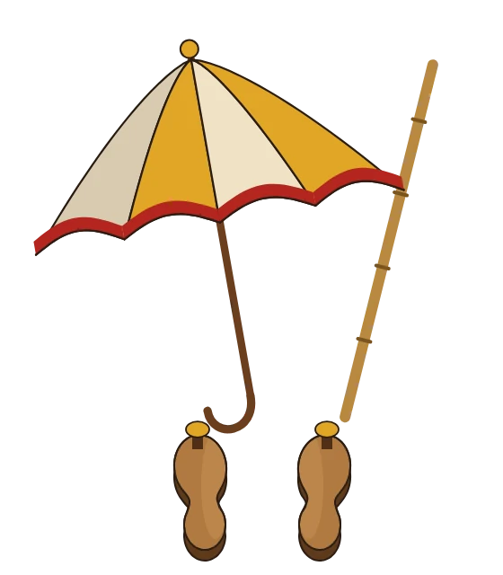
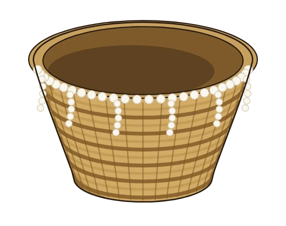
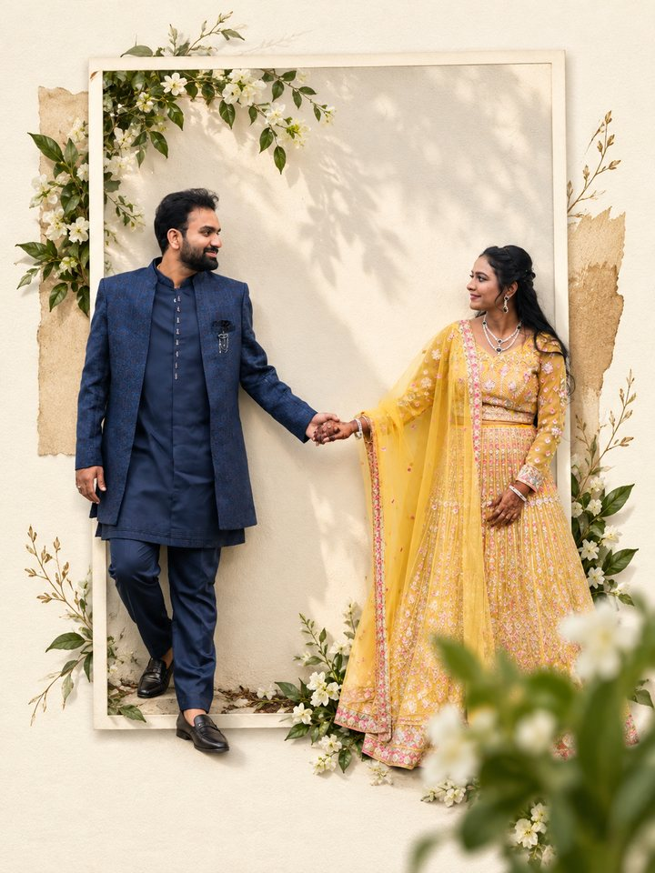
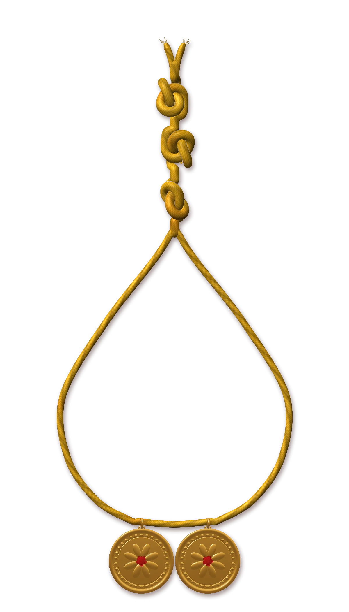
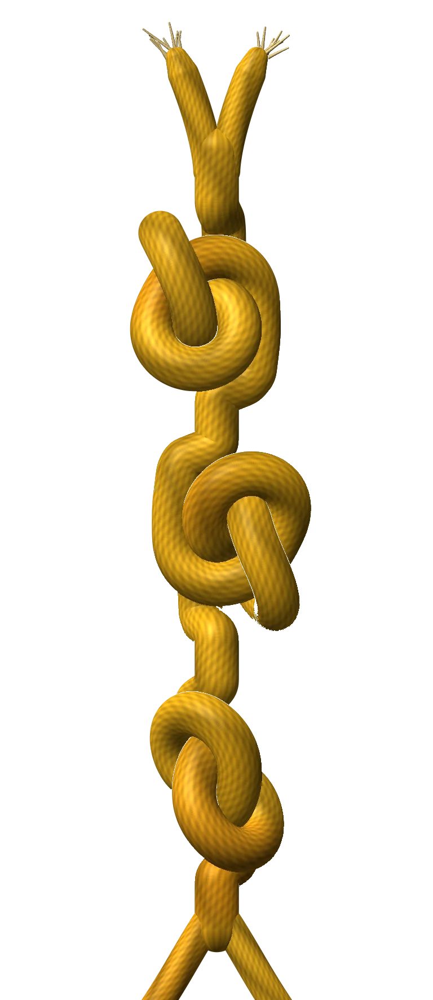
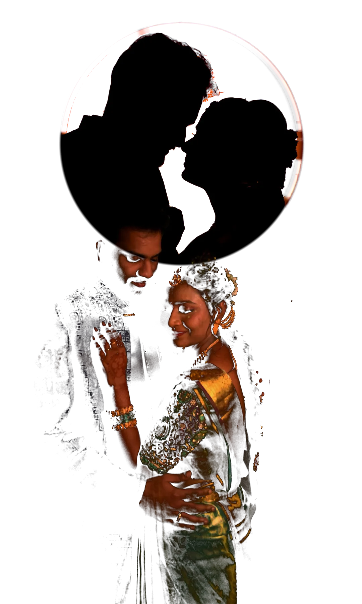

కాశీ యాత్ర
Kāśī Yātra
The groom announces he is leaving for Kashi to become an ascetic, with an umbrella, a walking stick and wooden sandals. The bride's brother stops him and offers his sister's hand instead. The groom always agrees.
శుభలేఖSubhalekha
Nikhitha & Sai Koundinya
00 / ౦
Nikhitha weds Sai Koundinya · DD · MM · YYYY
scroll gently
01 / ౧
ఓం శ్రీ గణేశాయ నమః
శ్రీరస్తుశుభమస్తుఅవిఘ్నమస్తు
Śrīrastu · Śubhamastu · Avighnamastu
May there be grace. May all be well. May nothing stand in the way.
With the blessings of the elders of both families
02 / ౨


are getting married
వివాహ మహోత్సవం
03 / ౩
దైవానుగ్రహముతో, పెద్దల ఆశీస్సులతో
శ్రీ చల్లపల్లి శ్రీధర్, శ్రీమతి వెంకట కృష్ణవేణి దంపతుల కుమార్తె
చి॥ల॥సౌ॥ నిఖిత
ను
కొవ్వూరు వాస్తవ్యులు శ్రీ కె. వి. వి. హరిమోహన్, శ్రీమతి శైలజ దంపతుల కుమారుడు
చి॥ సాయి కౌండిన్య
కు ఇచ్చి వివాహము చేయ నిశ్చయించితిమి.
కావున తామెల్లరూ సకుటుంబ సపరివార సమేతంగా విచ్చేసి, వధూవరులను ఆశీర్వదించవలసినదిగా ప్రార్థన.
With the grace of God and the blessings of our elders,
Sri Challapalli Sreedhar and Smt. Challapalli Venkata Krishna Veni invite you to the wedding of their daughter
Nikhitha
with
Sai Koundinya
son of Sri K. V. V. Hari Mohan and Smt. K. Sailaja, of Kovvur, East Godavari.
Please come with your whole family and bless the couple.
ఇట్లు, ఇరు కుటుంబాల వారుWith love, both families
చి॥ల॥సౌ॥ is short for Chiranjeevi Lakshmi Saubhagyavathi, the title a Telugu wedding card gives the bride: long life, prosperity and a happy marriage. The groom gets చి॥, Chiranjeevi, long life, and nothing more.
04 / ౪
Weekday
DD Month YYYY
HH:MM
When the paste of cumin and jaggery touches their heads, they are married.
స్వస్తిశ్రీ చాంద్రమానby the Telugu calendar
Counting down to the muhurtham
Daysరోజులు
Hoursగంటలు
Minutesనిమిషాలు
Secondsసెకన్లు
The countdown begins once the muhurtham is fixed.
Add to calendar05 / ౫
Celebrations

Date · Time
Mehendi
Henna ground from fresh leaves, on her palms and feet. Everyone checks how dark it stains.
Venue

Date · Time
Sangeet
Both families, one evening of songs, and a rehearsed dance that never goes as rehearsed.
Venue

Date · Time
Pellikuthuru
A turmeric bath, new glass bangles, and the first time each is dressed as bride and groom.
Venue

Date · Muhurtham
The wedding
The muhurtham itself. Every rite in the order you will see it, below.
Venue

Date · Time
Reception
Dinner on a banana leaf, and the long, happy queue to the stage to bless the couple.
Venue
06 / ౬
Before the muhurtham

Kāśī Yātra
The groom announces he is leaving for Kashi to become an ascetic, with an umbrella, a walking stick and wooden sandals. The bride's brother stops him and offers his sister's hand instead. The groom always agrees.

Kanyādānam
Her maternal uncles carry the bride to the mandapam in a bamboo basket. Her parents place her hand in his, and wash his feet as they would a god's.
07 / ౭
The cloth between them
A cloth, the tera, is held up between bride and groom so they cannot see each other. At the exact muhurtham each places the cumin and jaggery paste on the other's head. Then the cloth is lowered.

Scroll to lower the cloth
శుభదృష్టిthe first look
08 / ౮
Three knots
He ties the mangalasutram around her neck with three knots: a turmeric-yellow thread and two small gold discs, the pustelu, one from each family.


09 / ౯
Talambralu
They pour rice over each other's heads: grains coloured with turmeric, a few left white, a few red with kumkum. Whoever's hands go higher wins. Most Telugu wedding cards open with this verse about the pearls at the wedding of Sita and Rama.
జానక్యాః కమలాంజలి పుటే యాః పద్మరాగాయితాః
In Janaki's cupped hands, they looked like rubies.
న్యస్తా రాఘవ మస్తకే చ విలసత్ కుంద ప్రసూనాయితాః
Placed on Rama's head, they shone like jasmine.
స్రస్తాః శ్యామల కాయ కాంతి కలితాః యా ఇంద్రనీలాయితాః
Falling across his dark skin, they turned to sapphires.
ముక్తాస్తాః శుభదా భవంతు భవతాం శ్రీరామ వైవాహికాః
May those pearls from Sri Rama's wedding bring you every good thing.
Tap anywhere to throw talambralu
10 / ౧౦
Saptapadi · seven steps
The end of her saree is knotted to his scarf, the brahmamudi. Tied together, they take seven steps. The priest gives each step a purpose, and every line ends the same way: viṣṇus tvānvetu, may Vishnu walk with you.
ఏకమిషే
ekam iṣe
One, for food.
ద్వే ఊర్జే
dve ūrje
Two, for strength.
త్రీణి వ్రతాయ
trīṇi vratāya
Three, for the vows they keep.
చత్వారి మయోభవాయ
catvāri mayobhavāya
Four, for happiness.
పంచ పశుభ్యః
pañca paśubhyaḥ
Five, for the cattle.
షడృతుభ్యః
ṣaḍ ṛtubhyaḥ
Six, for the seasons.
సప్త సప్తభ్యో హోత్రాభ్యః
sapta saptabhyo hotrābhyaḥ
Seven, for the seven sacred offerings.
సఖా సప్తపదా భవ
sakhā saptapadā bhava
Seven steps taken. Now be my friend.

11 / ౧౧
Arundhati
That night the groom shows the bride the Saptarishi, the seven sages of the northern sky.
వసిష్ఠుని పక్కనే, అరుంధతి.Beside the sage Vasishtha is a faint star, his wife Arundhati. She is easy to miss, and she has never left his side.
12 / ౧౨
Muggu · the venue
A new muggu at the door every morning. This one was drawn for you.

13 / ౧౩
మీ ఆశీస్సులతో
We will be waiting for you.
Or call +91 ••••• •••••
అక్షింతలుAkshintalu
Every guest throws a pinch of turmeric rice over the couple as the mangalasutram is tied. If you can't be there, throw some from here.